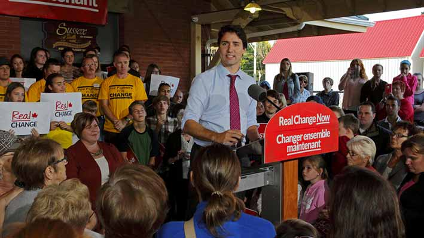

Point of View
Jamie Roach | Dreamstime.com
Harper's gone, Trudeau is in - The struggle continues
By No One Is Illegal
Posted October 21, 2015
Canada’s new Liberal government must be met with radical, collective, strategic organizations and mobilizations to improve the lives of communities.
Over 16 million Canadian citizens voted in yesterday’s election, the highest voter turnout since at least 1997. The result: Stephen Harper’s decade of conservative, anti-immigrant, and racist rule comes to an end, and the Liberal Party’s Justin Trudeau is now Prime Minister.
While many rejoice at the end of the Harper government, we also know that the new Liberal government must be met with radical, collective, strategic organizations, and mobilizations if we are to improve the lives of our communities.
The Liberal Party has governed Canada for about half of Canada’s existence, and is responsible for half of the grave injustices we now face, including but not limited to the coup in Haiti, cuts to the national housing plan, and the creation of the temporary foreign worker program and the Canada Border Services Agency. Thus it is clear to us that this new change in government will not result in the collective transformation we require.
Over 2.6 million residents, including migrant and undocumented immigrants and immigrants with permanent residency, many members of our communities and families, were barred from participating in even this most limited expression of democracy. At the same time, over 11 million people who voted for the Liberals, the NDP or the Green Party, did so to vote out Harper. The voter turnout and the up and downs of the elections campaign over the last 2.5 months prove that millions of people in this country are politically engaged, and are striving for something better.
It is our responsibility as social movements to create continued spaces for these people to be engaged and involved over the years to come. We must speak and we must listen. We must walk alongside people rather than alienate them. We must understand why the Liberals just swept to electoral victory, and build collective power towards real change that simply cannot be elected. We must reach out and build ties particularly in immigrant communities that were wooed by the Conservatives. We must share what we have learned through bitter experience about the failures of voting, symbolic appeals and electoral engagement and build visionary movements with strategies for winning change.
The lightning rods of this election were the Hijab at citizenship ceremonies, egregious surveillance laws like Bill C-51, transparency, corruption as well as heavy handed government by Stephen Harper. Again, and again we saw xenophobia curdling under the surface burst forward. We must build movements that understand these concerns and are inclusive, democratic, and equitable, and which support individual and community freedom and autonomy.
To this end, today we invite other radical political forces across the country to re-commit with us to the following:
1. Fight for Indigenous self-determination: We live on lands stewarded by Indigenous nations since time immemorial. It is our responsibility to support Indigenous communities and prevent continued imposition of colonial Canadian laws on them.
2. Stop the War on Mother Earth: Canada is the world’s leading climate criminal. We need to end destructive projects like the Tar Sands, fracking, logging, and hold Canadian mining companies here and abroad accountable for their crimes.
3. Stop the War Abroad: Canada provides military aid, weapons, and diplomatic support to repressive governments in Syria, Turkey, Saudi Arabia, Mexico, and other countries. Canada’s ‘development projects’ prop up corrupt governments, while providing unquestioning support for the Israeli occupation of Palestine. This must end.
4. End Corporate Control: While the poorest people in Canada and around the world live without homes and adequate services, the richest few control the livelihoods of millions. Multinational agreements like the TPP and CETA and bi-lateral agreements with Israel, Colombia, and Honduras give greater powers to heads of corporations to push for the interest of profit over people. Austerity politics in Canada mean that many essential services are on the chopping block. We must name and fight capitalism.
5. Freedom to Move: While over 60 million people are displaced around the world, most are unable to migrate to Canada. Poor and racialized people are only able to come to Canada under temporary programs, as a result over half a million people live here without immigration status and therefore rights and services and the previous government jailed and deported over a 100,000 people. We must push this new Liberal government to open up the borders to refugees and migrants and fight for freedom of movement. We must reject the categories of deserving and undeserving migrants and refuse the discrimination against poor, women, disabled, Muslim and Black migrants in particular.
On immigration, we will insist that the Liberals go above and beyond their promise of 25,000 government sponsored Syrian refugees immediately. That the interim federal health program for refugees be reinstated, and expanded to undocumented and migrant workers. That instead of fixing the system that deems some countries safe for refugees, the entire two-tiered refugee system be removed. That the Liberals not just double family sponsorship numbers from 5,000 to 10,000 but remove restrictive laws that make it impossible for poor immigrants to be reunited with their families. Bill C-24, C-51 and security certificate legislation must be repealed, not just amended. We must especially reject the Liberal plan to tie Live-In Caregivers to agencies, rather than to employers. We will continue to fight to end imprisonment of immigrants without charges or trial, and stop the deportations of our friends, families, and communities. We will not rest until all exclusionary immigration laws end.
So today October 20th, the struggle continues, as it must.